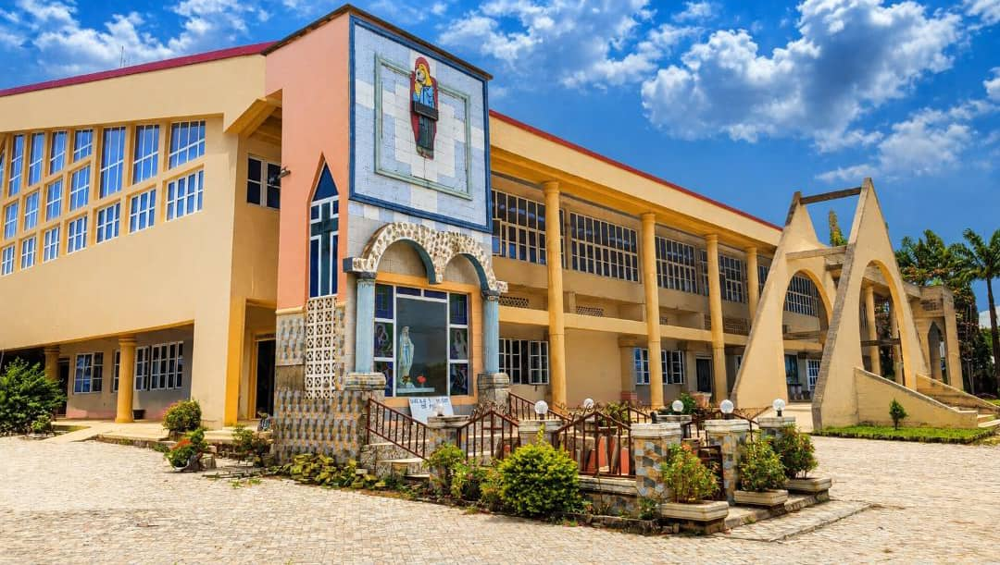

About Our Parish
Our Lady Queen of Peace is a Catholic community called to worship, grow in faith, and serve with compassion.
A Place to Belong
Whether you are new to the area, returning to church, or seeking a deeper connection, there is a place for you here. Come as you are, bring your questions, and take the next step in faith at a pace that feels right for you.
Centered in the Eucharist
At the heart of our life together is the Eucharist. In the celebration of Mass, we hear the Word of God, receive Christ, and are sent out to bring his hope into our homes, workplaces, and wider community.
Formed in Prayer & Daily Life
Faith is also nurtured in the ordinary moments of life: in personal prayer, learning the teachings of the Church, supporting one another through difficult seasons, and giving thanks together in times of joy.
An Open & Welcoming Home
Whether you have been Catholic for many years or are simply curious about the Church, you are welcome to pray with us, ask questions, and discover how parish life can help you grow.

A COMMUNITY OF FAITH
Created on 4th June 2006, Our Lady Queen of Peace Catholic Church, Odo-Afin, Kabba has grown through the faith and commitment of its 45 active parishioners. Our story is a living tradition carried forward whenever people gather to worship, welcome a neighbour, teach the faith, or serve someone in need.
We honour those who helped shape the parish while recognising that its life continues through everyone who takes part today. Each generation receives the gift of faith and has the opportunity to pass it on with renewed hope.
GATHERED IN WORSHIP
The Eucharist draws us together as one community. In the liturgy, Scripture, prayer, and the sacramental life of the Church turn our attention to Christ and renew us for the week ahead.
FORMED BY FAITH
Prayer gives shape to our life with God, while Scripture and the rich tradition of the Church help us understand the faith we celebrate. We continue learning so that belief may guide our choices and relationships.
SERVING ONE ANOTHER
Parish life is strengthened when each person offers their gifts in service. Acts of care, time, skill, and encouragement all help make the love of Christ visible in practical ways.
GROWING TOGETHER
Through worship, service, and fellowship, parishioners build a community where people can share their joys, find support in difficult times, and grow together in faith.
Faith That Welcomes and Serves
Our mission is to worship God, grow as disciples of Jesus, and share his love with all people. We strive to let the faith we celebrate shape the way we welcome, learn, care, and serve.
Worship and Prayer
We place the Eucharist and the sacraments at the heart of parish life. Through reverent worship, the Word of God, and a life of prayer, we seek to deepen our friendship with Christ and carry that grace into daily life.
Welcome and Service
We welcome each person with dignity and seek practical ways to care for our neighbours. This means listening, sharing what we can, and making our parish a place where people can find encouragement and opportunities to serve.

Mary, Queen of Peace
We look to Mary as a model of faith, humility, and trust in God.
In the Gospel, Mary listens to God’s call and responds with courage and openness. Her example reminds us that faith is not simply an idea: it is a daily willingness to trust God, to make room for his word, and to follow where he leads.
Her title, Queen of Peace, points us toward the peace Christ gives. It is a peace that calls us away from indifference and toward patience, reconciliation, compassion, and care for our neighbours.
As a parish entrusted to her patronage, we ask Mary to pray with us and for us. May her faithful witness lead us closer to Jesus and encourage us to become instruments of his peace in our families and community.
A Prayer for Peace
“Mary, Queen of Peace, pray for us and lead us to your Son, Jesus Christ our Lord.”
Serving Our Parish
Our pastoral leaders accompany the community in worship, formation, and service. The parish priest’s ministry includes celebrating the sacraments, preaching the Gospel, and offering spiritual guidance.

Rev. Fr. Casmir Okonkwo
The parish priest serves the community through the celebration of the sacraments, pastoral care, and guidance in faith. This ministry accompanies people through the milestones of Christian life and offers a listening presence in seasons of joy, uncertainty, and grief.
Parishioners seeking sacramental preparation, a pastoral conversation, or help connecting with a ministry are invited to contact the parish office.
“We are here to accompany you in faith and prayer.”
Working Together in Faith
Parish life is built through the commitment and gifts of many people. Alongside pastoral leadership, councils and ministry teams help care for the spiritual, practical, and organisational life of the community.